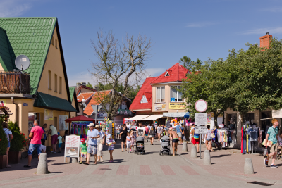

Welcome Maties!

Rowy is a small seaside village in northern Poland. It is in the administrative district of Gmina Ustka, withing Słupsk County, Pomeranian Voivodship. It is situated between three seaside cities - Ustka, Słupsk and Łeba. In the villege is the west entrance to the Słowiński National Park. The village has a proximate population of 350. The village is now a summer resort but it has a very interesting history which dates up to the Middle Ages.